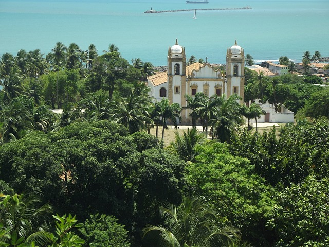

O que dizer de Recife

Recife é a capital do estado de Pernambuco e localiza-se na costa nordestina do litoral brasileiro. Possui um clima tropical fortemente influenciado pela umidade proveniente do oceano.A história da cidade está atrelada ao processo de colonização brasileiro. O município sofreu ainda, durante o Brasil Colônia, uma invasão de tropas holandesas.Os invasores contribuíram para a consolidação da estrutura urbana local.
Cultural
A construção iniciada em 1839 pela Sociedade Harmônico Theatral, é o mais antigo equipamento do Recife.O Teatro Apolo abriu suas portas pela primeira vez em 1842 e chegou a funcionar por 18 anos, mas foi vendido e transformado em um armazém de açúcar, tendo apenas sua fachada preservada.No início da década de 80, começou a ser restaurando, voltando a ser um espaço cênico. Mas somente em 1996, com a revitalização do Recife Antigo, que o local ganhou status de Cine-Teatro, oferecendo uma programação cultural sistemática.Hoje, juntamente com o Teatro Hermilo Borba Filho, instalado no mesmo endereço, integra o Centro de Formação e Pesquisa das Artes Cênicas Apolo-Hermilo, voltado para desenvolver projetos de formação e incentivo às artes cênicas.O espaço conta com programação alternativa, de segunda a quarta, a preços populares.
Acomodações
Imaginar uma acomodação aconchegante é visualizar um refúgio que oferece mais do que um simples lugar para descansar.É um espaço onde cada detalhe é pensado para proporcionar conforto e bem-estar.Essas acomodações são verdadeiros santuários pessoais, onde cada momento é uma celebração da natureza e da paz interior.